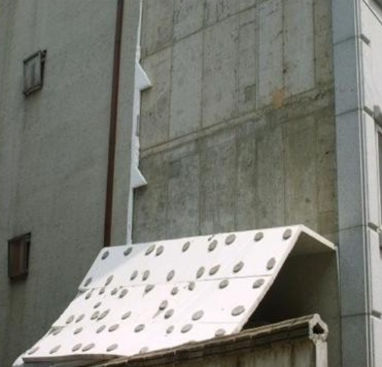
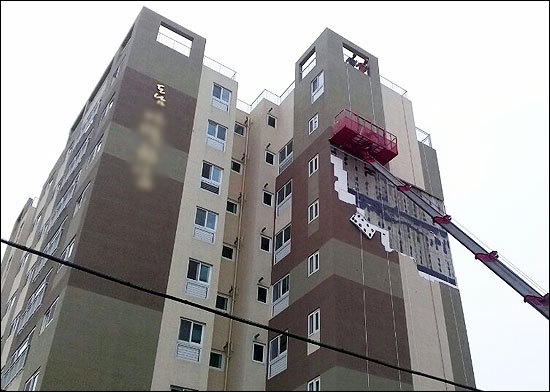
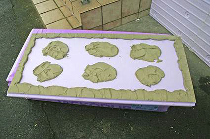

단열성과 시공성, 그리고 다양한 마감재까지 외단열 공법은 잘만 하면 정말 좋은 시공방법이지만, 가끔 언론을 통해 외단열 공법의 문제점이 거론되곤 합니다.
○ 대표적 하자유형
태풍에 외단열이 떨어졌다거나 단열재가 바가지처럼 휘었다거나 화재에 아주 약하다거나....이런 문제점들이 자주 제기됩니다.
물론 가장 중요한 문제는 단열재의 난연성능(불연, 준불연)이겠지만, 단열재의 난연성능이 문제가 없다는 가정하에서는 대부분의 결정적인 하자는 시공상의 문제 때문에 발생됩니다.

태풍이 불어 외단열이 뜯껴져 나간 하자는 '접착몰탈'의 잘못된 시공때문입니다.
흔히 '떡밥식' '떠바름식'의 시공인데요. 시공하기 편하다는 핑게로 떠바름식으로 했다가는 처음에는 괜찮을 수 있지만, 시간이 경과할수록 태풍등의 강한바람과 하중에 견디기 힘들어집니다.
접착몰탈 떠바름식(떡밥) 시공이
외단열 하자의 주 원인
떠바름식 시공은 화재에도 큰 문제를 일으킵니다. 단열재와 벽체사이의 빈공간이 많아지게 되고 그 빈공간이 화재시에는 굴뚝이 되어 화염이 수직으로 확산되는데 결정적 원인이 되고 있는 것입니다.
그외에도 빈공간은 단열효과도 떨어지게하고 열교와 겹쳐져 결로와 곰팡이를 유발시키기도 하는 외단열 시공의 총제적 원인으로 지적되고 있습니다.
○ 해결방안
접착몰탈 시공에서 떠바름식이 아닌 접착몰탈을 단열재의 테두리와 내부에 모두 발라주는 리본 앤 댑(Ribbon & Dab)방식으로 기밀하게 시공이 되어야 합니다.
특히 접착면은 전체 단열재면의 40% 정도를 확보해야 충분한 접착강도를 확보할 수 있는데, 현장의 여러가지 이유로 적용되고 있지 못한 실정입니다.
※ 리본앤댑 방식을 적용하려면 골조의 수직과 수평평활도가 나와야 가능한데 국내골조 형편상 어렵다는 의견이 있음.

접착몰탈 리본 앤 댑 (Ribbon & Dab) 도포 방식
어쨋든 리본앤댑 방식으로 접착몰탈을 시공하기 귀찮거나 어려울 수 있지만, 외단열 공법의 하자를 없애기 위해선 반드시 적용되어야 할 듯 합니다.
패스너(파스너, 화스너, Fastener)를 많이 설치하는 것도 아주 중요한 것 아시죠? ☞패스너에 대해서는 다음편에서 살펴보겠습니다.
드라이비트, 미장스톤, 스타코 등
외단열 시스템을 위한 준불연 가등급 EPS 단열재
DK보드
준불연 가등급 EPS 단열재 DK보드
건축용 / 외단열용 / 판넬용
문의 1855-2240